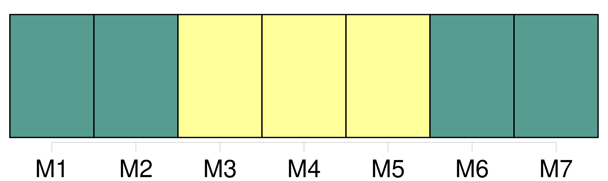
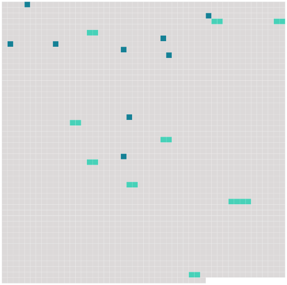

Longueur nb maillons : 18 mentions |
  |
De la présomption d' [absence] [7 phrases]
De la déclaration d' [absence] [1 phrases]
Lorsqu'une personne aura cessé de paraître au lieu de son domicile ou de sa résidence, et que depuis quatre ans on n'en aura point eu de nouvelles, les parties intéressées pourront se pourvoir devant le tribunal de première instance, afin que [l'absence] soit déclarée. [1 phrases]
Pour constater, [l'absence] , le tribunal d'après les pièces et documens produits, ordonnera qu'une enquête soit faite contradictoirement avec le commissaire du Gouvernement, dans l'arrondissement du domicile, et dans celui de la résidence, s'ils sont distincts l'un de l'autre. [1 phrases]
Le tribunal en statuant sur la demande, aura d'ailleurs égard aux motifs de [l'absence] , et aux causes qui ont pu empêcher d'avoir des nouvelles de l'individu présumé absent. [3 phrases]
Le jugement de déclaration d' [absence] ne sera rendu qu'un an après le jugement qui aura ordonné l'enquête. [1 phrases]
Des effets de l' [absence]
Section Ire [1 phrases]
Dans les cas où l'absent n'aurait point laissé de procuration pour l'administration de ses biens, ses héritiers présomptifs au jour de sa disparition ou de ses dernières nouvelles, pourront, en vertu du jugement définitif qui aura déclaré l' [absence] , se faire envoyer en possession provisoire des biens qui appartenaient à l'absent au jour de son départ ou de ses dernières nouvelles, à la charge de donner caution pour la sûreté de leur administration. [1 phrases]
Si l'absent a laissé une procuration ses héritiers présomptifs ne pourront poursuivre la déclaration d' [absence] et l'envoi en possession provisoire qu'après dix années révolues depuis sa disparition ou depuis ses dernières nouvelles. [18 phrases]
Après trente ans d' [absence] , la totalité des revenus leur appartiendra. [3 phrases]
Si [l'absence] a continué pendant trente ans depuis l'envoi provisoire, ou depuis l'époque à laquelle l'époux commun aura pris l'administration des biens de l'absent, ou s'il s'est écoulé cent ans révolus depuis la naissance de l'absent, les cautions seront déchargées ; tous les ayant-droit pourront demander le partage des biens de l'absent, et faire prononcer l'envoi en possession définitif par le tribunal de première instance. [3 phrases]
Si l'absent reparaît ; ou si son existence est prouvée pendant l'envoi provisoire, les effets du jugement qui aura déclaré [l'absence] , cesseront ; sans préjudice, s'il y a lieu, des mesures conservatoires prescrites au chapitre Ier du présent titre, pour l'administration de ses biens. [5 phrases]
Après le jugement de déclaration d' [absence] , toute personne qui aurait des droits à exercer contre l'absent, ne pourra les poursuivre que contre ceux qui auront été envoyés en possession des biens, ou qui en auront l'administration légale. [1 phrases]
Des effets de [l'Absence] , relativement aux Droits éventuels qui peuvent compléter à l'absent. [9 phrases]
Des effets de [l'Absence] , relativement au Mariage. [9 phrases]
Six mois après la disparition du père, si la mère était décédée lors de cette disparition, ou si elle vient à décéder avant que [l'absence du père] ait été déclarée, la surveillance des enfans sera déférée, par le conseil de famille, aux ascendans les plus proches, et, à leur défaut, à un tuteur provisoire, [33 phrases] En cas d'absence de l'ascendant auquel eût dû être fait l'acte respectueux, il sera passé outre à la célébration du mariage, en représentant le jugement qui aurait été rendu pour déclarer [l'absence] , ou, à défaut de ce jugement, celui qui aurait ordonné l'enquête, ou, s'il n'y a point encore eu de jugement, un acte de notoriété délivré par le juge de paix du lieu où l'ascendant a eu son dernier domicile connu. |
 |
La ressource peut être téléchargée sur la page Ortolang
Si vous avez des questions ou vous voyez des erreurs, merci d'envoyer un mail à silvia.federzoni89@gmail.com
Site développé par S. Federzoni (contact)